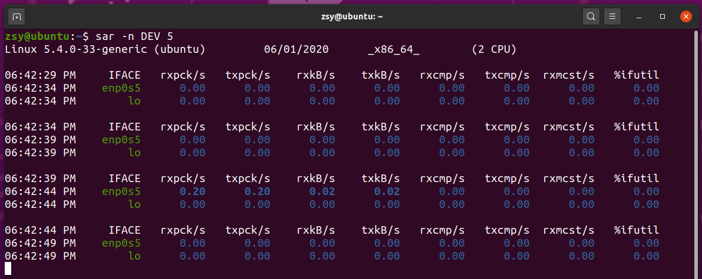

中断处理程序
- 分上半部与下半部
- 上半部对应硬件中断，用来快速处理中断
- 下半部对应软件中断，用异步处理上半部未完成的工作
- 观察中断可通过/proc/softirqs
sar命令
查看系统网络收发情况
# -n DEV 表示显示网络收发的报告，间隔1秒输出一组数据
$ sar -n DEV 1
15:03:46 IFACE rxpck/s txpck/s rxkB/s txkB/s rxcmp/s txcmp/s rxmcst/s %ifutil
15:03:47 eth0 12607.00 6304.00 664.86 358.11 0.00 0.00 0.00 0.01
15:03:47 docker0 6302.00 12604.00 270.79 664.66 0.00 0.00 0.00 0.00
15:03:47 lo 0.00 0.00 0.00 0.00 0.00 0.00 0.00 0.00
15:03:47 veth9f6bbcd 6302.00 12604.00 356.95 664.66 0.00 0.00 0.00 0.05

列表从左到右依次：
- 第一列：表示报告的时间。
- 第二列：IFACE 表示网卡。
- 第三、四列：rxpck/s 和 txpck/s 分别表示每秒接收、发送的网络帧数，也就是 PPS。
- 第五、六列：rxkB/s 和 txkB/s 分别表示每秒接收、发送的千字节数，也就是 BPS。
tcpdump命令
# -i eth0 只抓取eth0网卡，-n不解析协议名和主机名
# tcp port 80表示只抓取tcp协议并且端口号为80的网络帧
$ tcpdump -i eth0 -n tcp port 80
15:11:32.678966 IP 192.168.0.2.18238 > 192.168.0.30.80: Flags [S], seq 458303614, win 512, length 0
...
解决
SYN FLOOD 问题最简单的解决方法，就是从交换机或者硬件防火墙中封掉来源 IP，这样 SYN FLOOD 网络帧就不会发送到服务器中。